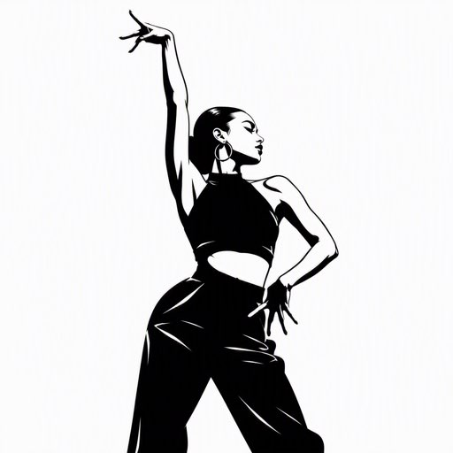

Waacking 起源于1970年代洛杉矶的地下俱乐部，最初在 LGBTQ 群体中流行。它诞生于迪斯科音乐的黄金时代，舞者通过快速有力的手臂动作和戏剧化的表演来表达自我。Waacking 曾经几乎消亡，但在2000年代后被重新发掘和推广，如今已成为全球街舞社区中备受喜爱的舞种。
Tyrone Proctor、Shabbada、Jody Watley、Kumari Suraj、Princess Lockeroo、Archie Burnett、Mickey Garcia、Jeffrey Daniel、Shawnette、Kami、Shelaina Anderson、Shan S、Shelby、Ibuki、Maika、Rina